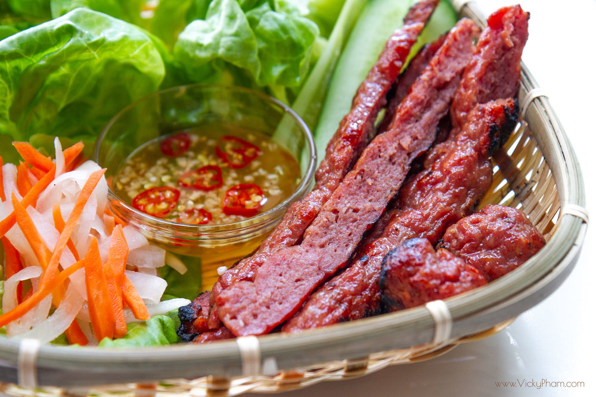

Nem Nuong

Description
Nem nướng (literally "grilled sausage"), is Vietnamese grilled pork sausage or grilled meatball, and a popular
Vietnamese food item, sometimes served as an individual appetizer or snack, or served with rice noodles or rice as a
main course.
Ingredients
- 2-1/2 lbs fatty ground pork (partially frozen)
- 5 oz pork fat trimmings (cut into small cubes; partially frozen)
- 1/4 cup granulated white sugar
- 1/4 cup fish sauce
- 1 bulb garlic (peel cloves and chop roughly)
- 1 large shallot (peel and chop roughly)
- 1 tablespoon roasted rice powder
- 1 tablespoon corn starch
- 1 packet Alsa baking powder
- 1/4 cup Tusino nem nuong curing powder
- 1 cup ice
Steps
- Break off partially frozen ground pork and pork fat and place them into the food processor. Add sugar, fish
sauce,
garlic, shallot, rice powder, corn starch, baking powder, curing powder and ice. Process for about 10 minutes on
high
until you get a smooth, light pink, homogeneous pork paste.
- Using rubber gloves, spread pork paste on a large baking sheet, one-inch in height.
- Bake at 350°F for 15-20 minutes. To get nice caramelization, turn the oven to broil for 5-10 minutes.
- Cut into stripes and serve on its own or part of other Vietnamese dishes.